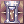

Siege Alterations
Siege Alterations are changes applied to certain behaviors, items and skills in Battlegrounds, King of Emperium, War of Emperium and/or Draft War of Emperium environments, which are made in an attempt to balance the game and create a more engaging Player vs. Player experience.
General Customizations
The following changes are applicable to all Siege environments:
Game Mechanics
- All players receive 85% less damage from skills and 50% less damage from auto attacks.
- All players receive an innate 20% after cast delay reduction bonus.
- All Baby characters are considered Medium size, including baby Dorams.
- Items and skills which ignore reflect have a cap of 30%.
- General Fixed Cast Time reduction has a 0.7 seconds cap. Proc chances, such as
 Zaha Doll Hat, can exceed this limit and stack.
Zaha Doll Hat, can exceed this limit and stack. - Critical Wounds lowers the effectiveness of healing received by 10% per level instead of 20%.
- Any methods of identifying items, such as
 Magnifiers or
Magnifiers or  Identify, are disabled.
Identify, are disabled.
Items
 Evil Gloves enabling the cast of
Evil Gloves enabling the cast of  Spider Web and autocasting Kimi's Mind Confusion are disabled.
Spider Web and autocasting Kimi's Mind Confusion are disabled. Mad Bunny and its [EVT] variant's Physical Reflect and autocast of
Mad Bunny and its [EVT] variant's Physical Reflect and autocast of  Magic Mirror are disabled.
Magic Mirror are disabled. Mettle, Magic Essence,
Mettle, Magic Essence, Acute,
Acute, Master Archer,
Master Archer, Adamantine,
Adamantine, Affection or
Affection or  Unyielding higher than level 5 are counted as if being level 5.
Unyielding higher than level 5 are counted as if being level 5. Cecil's Memory does not reduce the cooldown of
Cecil's Memory does not reduce the cooldown of  Unlimit.
Unlimit. Vellum Flail applies Critical Wounds instead of No Recovery at a lower chance.
Vellum Flail applies Critical Wounds instead of No Recovery at a lower chance. Purified Knight's Shield's DEF and MDEF bypass enchants are disabled.
Purified Knight's Shield's DEF and MDEF bypass enchants are disabled.- Endeavor Token Shop consumables are disabled, aside from
 Gin Sacred Draught.
Gin Sacred Draught. - Piercing Shadow Gear, Reload Set, 2nd Job Set and 3rd Job Set are disabled.
- All items not listed below have a 5-second cooldown:
- Mega White Potion, Mega Blue Potion, Violet Potion, WoE Blue Potion, BG Light Blue Potion, and their boxes, All Genetic Syrup Potions, Cursed Fragment, Butterfly Wing, Yggdrasil Seed, Ancilla, Pertz Runestone, Box of Gloom, Green Potion, Panacea and Aloevera.
Cards
 Sropho Card effect only works with autoattacks.
Sropho Card effect only works with autoattacks.- All MVP cards follow a tiering system. The card can be limited or allowed based on its Tier. All MVP cards have their respective Tier listed on their description.
- Tier 0
- Cards in this tier are banned from any Siege game mode. This tier is generally reserved as a blacklist for cards that have not yet been obtained and/or implemented.
- Tier 1
- Cards in this tier are limited to 3 per Guild in War of Emperium, and disabled in other Siege game modes.
- Tier 2
- Cards in this tier are limited to 5 per Guild in War of Emperium, and disabled in other Siege game modes.
- Tier 3
- Cards in this tier have no use limitations on any Siege game mode, but are disabled in King of Emperium.
Classes
 Arch Bishop
Arch Bishop
 Status Recovery can remove
Status Recovery can remove  Stasis effect.
Stasis effect.
 Genetic
Genetic
- All Homunculus S are considered Demi-Human.
 Ranger
Ranger
 Detect removes
Detect removes  Shadow Form at 100% success rate.
Shadow Form at 100% success rate.
 Rebellion
Rebellion
 Fallen Angel does not consume 'coins' and is usable with any/no weapon equipped.
Fallen Angel does not consume 'coins' and is usable with any/no weapon equipped. Anti-Material Blast has a fixed 100% chance of applying its debuff.
Anti-Material Blast has a fixed 100% chance of applying its debuff.
 Royal Guard
Royal Guard
 Devotion automatically transfers the status effects
Devotion automatically transfers the status effects  Defender, Auto Guard and
Defender, Auto Guard and  Reflect Shield to the target, without requiring a recast.
Reflect Shield to the target, without requiring a recast.
 Shadow Chaser
Shadow Chaser
 Manhole cannot be used repeatedly to trap targets already under its effect.
Manhole cannot be used repeatedly to trap targets already under its effect.- Shadow Form is removed instantly by Ruwach,
 Sight or
Sight or  Phantom Menace.
Phantom Menace.
 Sorcerer
Sorcerer
 Land Protector removes
Land Protector removes  Escape Ankle Snare unit.
Escape Ankle Snare unit.
 Soul Reaper
Soul Reaper
 Curse of Wicked Souls status effect increases Shadow Property damage for Soul Reapers only.
Curse of Wicked Souls status effect increases Shadow Property damage for Soul Reapers only.- Soul Reapers do not lose souls on death.
 Summoner
Summoner
- Doram-race characters are considered Demi-human/Player race instead of Brute.
- Summoners are allowed to wear
 WoE Robe set.
WoE Robe set.  Spirit of Life gives its full damage bonus (100%) regardless of current HP.
Spirit of Life gives its full damage bonus (100%) regardless of current HP. Silvervine Root Twist has a non-reducible 2-second cooldown and does not refresh its duration if used on an already rooted target.
Silvervine Root Twist has a non-reducible 2-second cooldown and does not refresh its duration if used on an already rooted target.
 Sura
Sura
 Cursed Circle can be removed by Dispell.
Cursed Circle can be removed by Dispell.- Cursed Circle cannot be cast on top of the Emperium.
 Gates of Hell damage is altered.
Gates of Hell damage is altered. Knuckle Arrow will no longer moves the caster to the target.
Knuckle Arrow will no longer moves the caster to the target.
 Warlock
Warlock
- Stasis does not block the cast of Status Recovery.
 Mystical Amplification is disabled.
Mystical Amplification is disabled. Comet does not apply the Magic Intoxication status effect.
Comet does not apply the Magic Intoxication status effect.
Battlegrounds Customizations
The following changes are applicable only in Battlegrounds:
Game Mechanics
- Every player receives the skill Freedom.
- An exclusive Battlegrounds skill that instantly cures the caster from any negative effect and can be use while disabled. Has a 2-minute cooldown.
- Weapons with refines greater than 15 will be treated as +15 inside Battlegrounds (except the MVP-On BG version).
- Negative status effects last a maximum of 20 seconds.
- All gear break chances are halved.
Items
- Illusion Immaterial Sword's SP Drain effect and chance are reduced by 10% each.
Classes
 Minstrel /
Minstrel /  Wanderer
Wanderer
- Performer Chorus skills can be used without being in the same party.
 Invulnerable Siegfried no longer requires both performers to be on the same party.
Invulnerable Siegfried no longer requires both performers to be on the same party.
- Only the caster will be affected by fatigue.
Sorcerer
 Vacuum Extreme is disabled.
Vacuum Extreme is disabled.
Soul Reaper
- Soul Reapers receive
 Soul Linker Spirit status at spawn.
Soul Linker Spirit status at spawn.
War of Emperium Customizations
The following changes are applicable only in War of Emperium and Draft War of Emperium:
Game Mechanics
- Barricades receive only 20% of the damage / healing inflicted.
- Players take double damage from any source while casting Emergency Recall.
- All players are affected by Proximity Resistances.
- For each guild member on a 15x15 area, the player receives 2% less damage, up to 30% (or 15 guild members nearby). This reduction is applied after all other damage calculations.
Items
- Illusion Immaterial Sword's SP Drain effect can only be applied through Auto Attacks.
Classes
Genetic
 Crazy Weed's Cooldown cannot be reduced below 4 seconds.
Crazy Weed's Cooldown cannot be reduced below 4 seconds.-  Full Chemical Protection has a 7-cells cast range.
 Rune Knight
Rune Knight
 Algiz Runestone can be used.
Algiz Runestone can be used.
- Algiz applies the effects of Millennium Shield, Stonehard Skin, and 50% increase in healing effectiveness to all party members (excluding the caster) in a 7x7 area and has a 1-minute duration and cooldown.
Sorcerer
 Mind Breaker is disabled.
Mind Breaker is disabled.
Soul Reaper
 Kaite increases physical damage taken by +50% instead of +400%.
Kaite increases physical damage taken by +50% instead of +400%.
Draft WoE Customizations
The following changes are applicable only in Draft War of Emperium:
Classes
Genetic
- Full Chemical Protection is not removed by death.
Minstrel
 Poem of Bragi applies to the caster's entire guild instead of just their party.
Poem of Bragi applies to the caster's entire guild instead of just their party.
| Siege and Player vs Player | |
|---|---|
| PvP |
Battlegrounds • War of Emperium • Draft War of Emperium • King of Emperium • Duels • PvP Rooms |
| Mechanics |
Siege Alterations • Siege Rules • Guild Dungeon Investment System |
| Rewards and Vanity | |